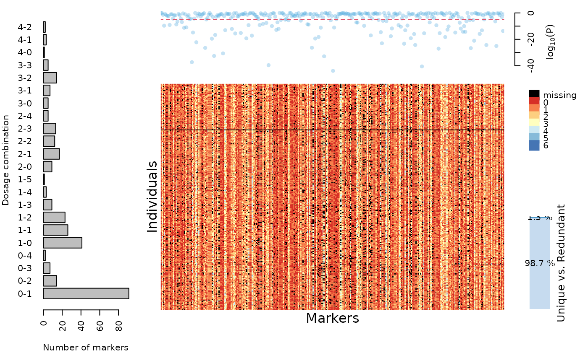

This function merges two datasets of class mappoly.data. This can be useful
when individuals of a population were genotyped using two or more techniques
and have datasets in different files or formats. Please notice that the datasets
should contain the same number of individuals and they must be represented identically
in both datasets (e.g. Ind_1 in both datasets, not Ind_1
in one dataset and ind_1 or Ind.1 in the other).
merge_datasets(dat.1 = NULL, dat.2 = NULL)the first dataset of class mappoly.data to be merged
the second dataset of class mappoly.data to be merged (default = NULL);
if dat.2 = NULL, the function returns dat.1 only
An object of class mappoly.data which contains all markers
from both datasets. It will be a list with the following components:
ploidy level
number individuals
total number of markers
the names of the individuals
the names of the markers
a vector containing the dosage in
parent P for all n.mrk markers
a vector containing the dosage in
parent Q for all n.mrk markers
a vector indicating which sequence each marker belongs. Zero indicates that the marker was not assigned to any sequence
Physical position of the markers into the sequence
if one or both datasets originated from read_vcf, it keeps reference alleles from sequencing platform, otherwise is NULL
if one or both datasets originated from read_vcf, it keeps alternative alleles from sequencing platform, otherwise is NULL
if one or both datasets originated from read_vcf, it keeps marker read depths from sequencing, otherwise is NULL
(unused field)
a matrix containing the dosage for each markers (rows)
for each individual (columns). Missing data are represented by
ploidy_level + 1
if both datasets contain genotype distribution information, the final object will contain 'geno'. This is set to NULL otherwise
(0)
(NULL)
a vector containing p-values related to the chi-squared test of Mendelian segregation performed for all markers in both datasets
if elim.redundant = TRUE when reading any dataset, holds all non-redundant markers
if elim.redundant = TRUE when reading any dataset, holds all non-redundant markers and its equivalence to the redundant ones
Mollinari, M., and Garcia, A. A. F. (2019) Linkage analysis and haplotype phasing in experimental autopolyploid populations with high ploidy level using hidden Markov models, _G3: Genes, Genomes, Genetics_. doi: 10.1534/g3.119.400378
# \donttest{
## Loading a subset of SNPs from chromosomes 3 and 12 of sweetpotato dataset
## (SNPs anchored to Ipomoea trifida genome)
dat <- NULL
for(i in c(3, 12)){
cat("Loading chromosome", i, "...\n")
tempfl <- tempfile(pattern = paste0("ch", i), fileext = ".vcf.gz")
x <- "https://github.com/mmollina/MAPpoly_vignettes/raw/master/data/sweet_sample_ch"
address <- paste0(x, i, ".vcf.gz")
download.file(url = address, destfile = tempfl)
dattemp <- read_vcf(file = tempfl, parent.1 = "PARENT1", parent.2 = "PARENT2",
ploidy = 6, verbose = FALSE)
dat <- merge_datasets(dat, dattemp)
cat("\n")
}
#> Loading chromosome 3 ...
#> Registered S3 method overwritten by 'vegan':
#> method from
#> rev.hclust dendextend
#>
#> Loading chromosome 12 ...
#>
dat
#> This is an object of class 'mappoly.data'
#> Ploidy level: 6
#> No. individuals: 315
#> No. markers: 310
#> Missing data: 6.19%
#> Redundant markers: 1.27%
#>
#> This dataset contains chromosome information.
#> ----------
#> No. of markers per dosage combination in both parents:
#> P1 P2 freq
#> 0 1 91
#> 0 2 14
#> 0 3 7
#> 0 4 2
#> 1 0 41
#> 1 1 26
#> 1 2 23
#> 1 3 9
#> 1 4 3
#> 1 5 1
#> 2 0 9
#> 2 1 17
#> 2 2 12
#> 2 3 13
#> 2 4 5
#> 3 0 5
#> 3 1 7
#> 3 2 14
#> 3 3 5
#> 4 0 1
#> 4 1 3
#> 4 2 2
plot(dat)

# }